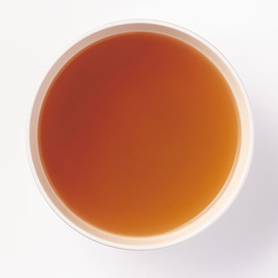
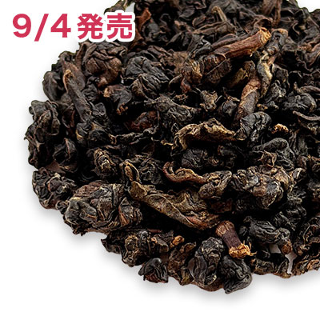

LUPICIA 3257 · g12803257
아리산 홍우롱 여름따기
阿里山紅烏龍 夏摘み
アリサンホンウーロン
수량한정


高山茶の人気産地が生み出す上質な紅烏龍茶
完熟果実や龍眼を思わせる豊かな香りに、みずみずしい甘みが調和する、発酵度の高い上質な台湾高山茶。
【お茶の説明】
烏龍茶の人気産地として有名な阿里山ですが、実は紅茶や紅烏龍など、烏龍茶以外のお茶も作られています。紅烏龍とは発酵度の高い烏龍茶で、台湾・台東県が発祥です。
近年、高山茶の産地でもその製法が取り入れられ、各地で生産が行われています。
紅烏龍茶は、伝統的な烏龍茶の手法である重焙煎と紅茶の発酵度を融合させた、双方の特徴が調和した風味の烏龍茶です。 味わいは深みがあり、しっかりとした烏龍茶の風味ですが、飲み口はすっきりで切れ味の良さがあります。標高1,000m以上の高地でじっくりと育まれた茶葉ならではの上質感と、紅烏龍らしい芳醇さを兼ね備えた一杯を、ぜひお楽しみください。
【産地情報】
阿里山は標高2,000mを超える峰を18も有する、台湾島を南北250kmに走る大山脈。1980年代初期に阿里山中腹で茶の栽培が始められ、発売されるなり脚光を浴びました。
阿里山山脈の周辺、標高1,000〜2,300mの間には数多くの茶園があり、台湾高山茶の最大の産地です。
- 상품번호
- 3257
- 상품 형태
- 30g 봉입
- 가격
- 2,200円
- 판매 안내
- ※수량・기간한정
※상미기한：제조일로부터2년 - 원재료
- 半発酵茶※商品の改定などにより、商品パッケージの記載内容が上記内容と一部異なる場合がございます。
- 원산지
- 台湾・嘉義県※商品の改定などにより、商品パッケージの記載内容が上記内容と一部異なる場合がございます。
- 찻잎
- 6g
- 물
- 熱湯
- 우림 시간
- 45秒-1分
- 우림 횟수
- 4-5回
다른 포장
보관된 상품 정보 갱신일: 2026-10-04